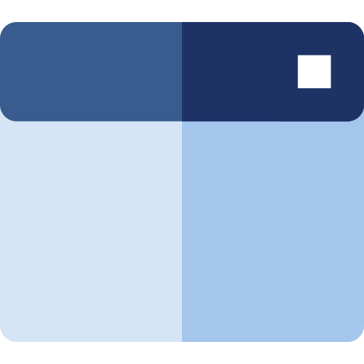

Lancez en temps record vos projets Numériques!
Apprenez visuellement et sans écrire de code grace à la technologie No-Code
Bienvenue dans la révolution No-Code
La technologie No-Code vous permet de créer des applications web et mobile avancées de façon visuelle et sans écrire le moindre code.
Nos formations NoCode disponibles actuellement
Nos formation nocode sont gratuites et disponibles en E-learning et Visioconférence

Blogs et Sites Web
Créer des blogs et sites web modernes et uniques sans perte de temps et d’argent.


Sites eCommerce
Créer des blogs et sites web modernes et uniques sans perte de temps et d’argent.

Automatisation Web
Créer des blogs et sites web modernes et uniques sans perte de temps et d’argent.
Blogs et Sites Web
Créer des blogs et sites web modernes et uniques sans perte de temps.

Applications Mobile
Créer des applications mobiles visuellement sans depenser une fortune.



Applications Web
Créer des applications web sans ecrire du code


Sites eCommerce
Créer des boutiques en ligne professionnelles sans effort.
Automatisation Web
Automatisés vos applications Web avec quelques clics.


Productivité et collaboration
Apprenez à collaborer en temps réel avec vos équipes remotes
eMarketing
Apprenez à maitriser le marketing en automatique et intelligement.
Design UI/UX
Vous aimez le design, vous allez adorer nos formations No-code orienté design.
API & Database
Le backend vous a toujours fait peur? plus maintenant, découvrez notre formation backend sans code


Intelligence Artificielle (AI)
Envie encore d’aller plus vite? utilisez des outils l’AI nocode pour vous aider à gagner d’avantage du temps

Nos formations NoCode disponibles prochainement
Créer des blogs et sites web modernes et uniques sans perte de temps et d’argent.
Applications Mobile
Créer des blogs et sites web modernes et uniques sans perte de temps et d’argent.
Applications Web
Créer des blogs et sites web modernes et uniques sans perte de temps et d’argent.
Automatisation Web
Créer des blogs et sites web modernes et uniques sans perte de temps et d’argent.
Blogs et Sites Web
Créer des blogs et sites web modernes et uniques sans perte de temps et d’argent.